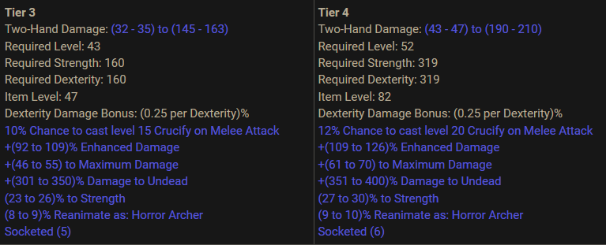

Game progression
- Kill monsters
- Acquire loot
- Equip Loot
- Unlock more zones
- Kill more monsters
- Repeat
Kill monsters
Each areas have different monster level. It is better to kill monsters that are around your level. Aerial has made a recap list that is very handy (It's the text with colors around the middle of his post)
Loots and items
Items have specific stats that are needed to have before equipping them. Always keep a few stat point to be able to equip them at all times. Some items can only be equipped by specific chars, beware of that.
Be careful before upgrading a TU item to its next tier, as the stats requirement are steep. Check their page for a indication of their stat requirements.

Look at the dexterity requirement from Tier3 to Tier4, its a huge step. Don't upgrade before checking the docs.
Progression guide
HechtHeftig's Newbie walkthrough